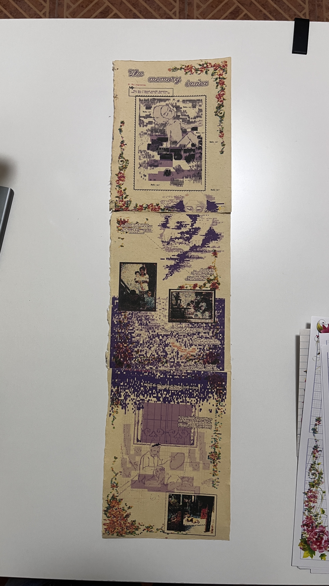
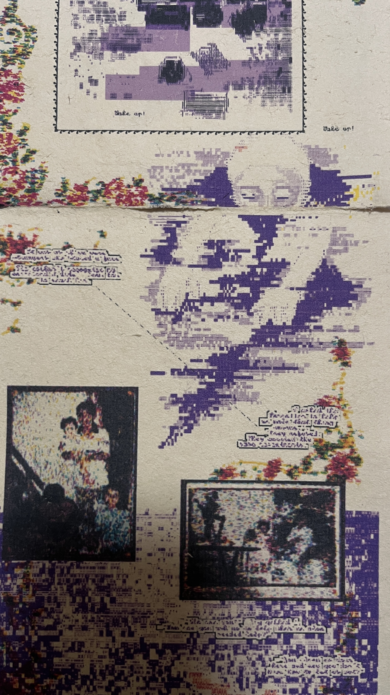

Creative Process Documentation
Nguyen Thu Trang – s3926717
COMM2754 Major Project, Semester C 2025
School of Communication and Design, RMIT University Vietnam
Foreword
Honestly, over the past few years, my inner life has been in a pretty bad place. It’s like—I became afraid of feeling sad, so I stopped allowing myself to feel too much of anything at all. I tried not to care too deeply about anything.
Over time, that left me completely hollow. I wasn’t deeply sad, but I wasn’t excited either. And gradually, I began to forget my own memories. Not all of them were exactly “precious” memories—some of them were terrifying to me at the time. But now, I feel so detached from my own emotions that I no longer remember those memories as things I once lived through.
I would catch myself thinking:
“Did this really happen to me?”
“But why don’t I feel anything about it anymore?”
It feels as if I’m looking at someone else’s memories—like a stranger’s fragments—and I’m just a guest who happened to overhear their story.
That realization made me sad. The things I went through once felt so intense—joy, sorrow, overflowing happiness, and the deepest pain. I truly believe I tasted every bitter and sweet flavor of life. And yet now, everything looks the same, as if my memories have lost their meaning.
Without them, I feel like I no longer have a core holding me together—like a person already worn down by life, trying to keep moving without anything inside to anchor them.
I’m afraid I won’t be able to endure a life that is sometimes boring, sometimes difficult. I’m also afraid I won’t fully live the gift that this dull, exhausting life occasionally throws my way.
Because of that fear, I decided to turn inward. To look closely at what I really think, what I have actually felt, and how the people around me are living their lives. I realized I needed to carefully take inventory of my experiences—one by one—so that someday, I might be able to leap further forward. That is why I started this project.
I want to thank the people who have supported me until now, even though I know I’ve often been careless toward them. I also want to change myself. And for that reason, I felt I had to make this project.
—
At the beginning, I wanted to tell a story about a group of abandoned memories rising up and marching together to demand justice. It would have been an expedition of forgotten things, with their destination being the person who owned those memories. I imagined that once they arrived, they’d probably beat that person up for daring to forget them.
But making a short animated film on my own felt unrealistic to finish within a three-month course. My mentor suggested a different approach: what if I created a single interactive 3D character on a web platform instead? People could interact with it by drawing their childhood imaginations on paper, and I would project those drawings onto the 3D character as a custom skin. Users could also change the character’s environment—like Northern Vietnamese countryside scenes or Southern river landscapes—and even choose regional lullabies they grew up with.
Eventually, I realized this idea wasn’t very engaging. Asking users to immediately draw their childhood imagination felt too demanding, and the interaction didn’t encourage the kind of inward reflection I wanted. With only one interaction, the reflection felt shallow.
So I started looking for another way to create a work that would allow people a small, honest moment to think back on their past. That’s when I thought about journaling.
I’m not someone who naturally journals. And because of that, I think I paid the price—I ended up trivializing a large part of my life, just like I described earlier.
I realized I needed to try writing down what I was truly feeling. So I created a website where people can write and redraw their memories. Users can write their thoughts, save images of things that happened, or—if they don’t have images—draw instead.
Traditional note-based journaling feels boring to me. So maybe this website could be a more interesting option for someone on a sleepless night. At least, it works for me.
Because of that, I wanted the website to have a strong concept as its unique selling point. I wanted to return to my elementary school years—when I was just a kid who didn’t overthink, who felt confident with what they had, who accepted themselves as they were, and who loved what they were doing. Back then, everything felt clear, as if I already had all the answers.
That’s why I chose aesthetics from the 2010s: childhood games, grid-lined notebooks, purple ink pens, Zing Me—things deeply familiar to kids who grew up in that era. It’s my way of inviting those memories to come back to me.
At the same time, I wanted something structured to exist alongside those emotions—something systematic and clear. That way, I wouldn’t drown in sentimentality, and I could reflect more clearly. I began thinking about charts, systems, numbers, and reports. That led me to net.art diagrams—complex visual systems used to describe something deeply emotional and subjective.
So I decided to combine net.art—a form of computer-based art from the early internet—with the nostalgic memories of Vietnamese students from the 2010s, and see what would happen.
Users' using The Memory Index Tools to create ASCII drawings


Then the results will be printed out by Nguyen Thu Trang (yuuki) to display at the RMIT Major Project Showcase
I. Tổng quan dự ánI. Project Overview
1. Tuyên ngôn ý tưởng1. Concept Statement
Tôi muốn thực hiện một dự án lớn có thể truyền cảm hứng cho mọi người trân trọng những cảm xúc trong quá khứ và những ký ức cốt lõi để họ có thể hiểu bản thân mình hơn. Vì tôi nhận thấy chúng ta đang sống trong một xã hội bảo chúng ta phải phớt lờ những cảm xúc mạnh mẽ để chiến thắng trong cuộc sống, nhưng điều đó không đúng. Từ trải nghiệm của chính mình, tôn trọng những gì chúng ta cảm thấy giúp chúng ta trưởng thành.
I want to make a major project that would inspire people to embrace their past emotions
and core memories so they can understand themselves better. Since I notice that we are
living in a society that tells us to ignore the strong emotions in order to win in life,
but it’s not true. From my own experience, respecting what we feel helps us grow.
2. Tóm tắt2. Abstract
The Memory Index là một nền tảng tương tác công cộng trên web được xây dựng bằng p5.js. Dự án chuyển đổi những ký ức cá nhân—ghi chú viết tay, hình ảnh và phác thảo—thành những hiện vật trực quan có thể in được. Những đầu ra này có dạng Biểu đồ Chỉ số Ký ức và trò chơi Đông-Tây-Nam-Bắc bằng giấy. Dự án khám phá cách thẩm mỹ net.art và các hệ thống tính toán có thể hoạt động như những công cụ để phản chiếu cảm xúc.
The Memory Index is a public, web-based interactive platform built with p5.js. The project
transforms personal memories—written notes, images, and sketches—into printable visual
artifacts. These outputs take the form of a Memory Index Diagram and an East–West–South–North
paper fortune-teller. The project explores how net.art aesthetics and computational systems
can function as tools for emotional reflection.
Fig 1. My ASCII drawing using my own Memory Index Tool
3. Câu hỏi dự án3. Project Question
Câu hỏi nghiên cứu định hướng cho dự án này là:
“Làm thế nào chúng ta có thể trân trọng ký ức của mình thông qua net.art?”
Thay vì đưa ra câu trả lời hay đơn thuốc, dự án điều tra cách các hệ thống net.art—như biểu đồ, đồ họa ASCII và các tương tác gốc trên trình duyệt—có thể chuyển dịch các trạng thái cảm xúc thành các dạng thức có thể đọc và xem lại được.
The guiding research question for this project is:
“How can we embrace our memories through the net.art?”
Rather than offering answers or prescriptions, the project investigates how net.art systems—
such as diagrams, ASCII graphics, and browser-native interactions—can translate emotional
states into readable and revisit-able forms.
4. Khán giả mục tiêu4. Target Audience
Khán giả chính của The Memory Index là người dùng Việt Nam độ tuổi 18–30, mặc dù nền tảng vẫn mở cho tất cả mọi người. Đối tượng này hoài niệm về văn hóa đại chúng Việt Nam những năm 2000–2010 và thích viết nhật ký, làm đồ DIY và thử nghiệm hình ảnh. Nhiều người dùng không thích việc viết nhật ký chỉ toàn chữ truyền thống và thích các công cụ vui tươi, có tính tạo sinh cho phép suy ngẫm trong những phiên ngắn vào đêm khuya.
The primary audience for The Memory Index is Vietnamese users aged 18–30, though the platform
remains open to everyone. This audience is nostalgic for Vietnamese pop culture from the
2000s–2010s and enjoys journaling, DIY making, and visual experimentation. Many users dislike
traditional text-only journaling and prefer playful, generative tools that allow reflection
in short, late-night sessions.
II. Thực hành sáng tạo và Phát triển II. Creative Practice and Iterative Development
1. Tuần 0–2: Định hướng hình ảnh và Thử nghiệm ban đầu1. Week 0–2: Visual Direction and Early Experiments
Trong giai đoạn đầu của dự án, trọng tâm là thiết lập một định hướng hình ảnh có thể cân bằng giữa thẩm mỹ biên tập hoài cổ của Việt Nam với net.art và hình ảnh thơ-dữ liệu. Các thử nghiệm ban đầu khám phá kiểu chữ lấy cảm hứng từ chữ viết tay của học sinh Việt Nam và các thử nghiệm bố cục sớm sử dụng p5.js. Tôi cũng bắt đầu thử nghiệm các bộ lọc hình ảnh như posterization và pixelation để hiểu cách hình ảnh ký ức có thể được chuyển đổi thành các kết cấu có thể in được.
During the early stage of the project, the focus was on establishing a visual direction that
could balance Vietnamese nostalgic editorial aesthetics with net.art and data-poetic visuals.
Initial experiments explored typography inspired by Vietnamese student handwriting and early
layout tests using p5.js. I also began experimenting with image filters such as posterization
and pixelation to understand how memory images could be transformed into printable textures.
2. Tuần 3: Phản ánh cá nhân và Thử nghiệm tương tác2. Week 3: Personal Reflection and Interaction Testing
Vào Tuần 3, tôi bắt đầu bằng việc suy ngẫm về những ký ức cốt lõi của chính mình thông qua việc viết. Quá trình viết nhật ký cá nhân này đã giúp thiết lập nền tảng cảm xúc cho dự án. Đồng thời, tôi đã tiến hành các thử nghiệm tương tác sớm trên web, bao gồm cơ chế phác thảo đơn giản và thử nghiệm in trò chơi Đông-Tây-Nam-Bắc. Những thử nghiệm này cho thấy việc vẽ tự do bằng chuột cảm thấy không thoải mái và không khuyến khích sự suy ngẫm.
In Week 3, I began by reflecting on my own core memories through writing. This personal journaling process helped establish an emotional foundation for the project. At the same time, I conducted early interaction tests on the web, including simple sketching mechanics and paper fortune-teller print tests. These experiments revealed that freehand mouse drawing felt uncomfortable and did not encourage reflection.
Một ngày nọ, tôi thấy mình đang chìm xuống,
và tôi không biết làm sao để đánh thức cô ấy dậy.
⎯⎯⎯
Cứ như thể chúng tôi là những người xa lạ có chung một khuôn mặt.
Cô ấy không thể nhận ra giọng nói của tôi, và tôi không biết làm sao để chạm tới cô ấy.
⎯⎯⎯
Tôi nhờ những Kẻ Bị Lãng Quên giúp tôi đánh thức thứ bên trong đó.
Họ từ chối. Họ mang theo những oán giận tương tự.
"Ngươi là ai?" họ hét lên.
"Sao ngươi dám nhờ chúng ta giúp khi chúng ta cũng cần giúp đỡ?
Ngươi đã ném chúng ta xuống đây—và giờ ngươi không biết làm sao để thả chúng ta ra?
Chúng ta đang chết cùng nhau. Ngươi và chúng ta."
⎯⎯⎯
"Sống một cuộc đời khốn kiếp như vậy thì có ý nghĩa gì?" tôi tự hỏi.
Tôi yêu cuộc sống khi tôi nằm trên chân bà và bà hát những bài hát ru cũ.
Không khí thiêu đốt châm chích da tôi, một cái nóng ẩm ướt mà tôi không thể tìm thấy ở đâu khác.
Tôi yêu cuộc sống khi tôi vẫn có thể ngủ cùng phòng với bố.
Mỗi đêm tôi hôn lên má ông chúc ngủ ngon.
Những chú chim buổi sáng dệt tổ bên ngoài cửa sổ của chúng tôi; giọng hót của chúng khơi dậy thôi thúc sáng tạo—
để mang một chút vẻ đẹp vào thế giới.
Tôi yêu cuộc sống khi anh trai cõng tôi trên lưng.
Tôi yêu cảm giác đó—được yêu thương, biết điều đó, và biết ơn.
Tôi yêu cuộc sống khi tôi nhìn lên bầu trời, đuổi theo bạn bè quanh góc phố của chúng tôi.
Gió luồn qua những chiếc lá với tốc độ vừa phải, vẽ nên những hoa văn nhỏ bé từ bên dưới.
Ánh nắng chiếu vào mắt tôi rực rỡ đến mức nó vẫn tỏa sáng trong ký ức.
Đó là rất nhiều thứ.
Vì vậy tôi cầu xin chính mình:
đừng vội quên chúng.
Hãy cố gắng thức dậy lần nữa.
Làm ơn.
Ngay cả khi bây giờ không được, ngay cả khi chúng ta thất bại nhiều lần,
hãy nhớ rằng: một ngày nào đó chúng ta sẽ cảm nhận lại được—
sự bơi ngược dòng, sự thức tỉnh.
Hãy tiếp tục đi qua mọi cột mốc của cuộc đời.
Tôi biết tôi có thể.
Tôi yêu bạn—
ngay cả khi tôi không nhận ra bạn cần bao nhiêu cái ôm.
One day I found myself drowning,
and I don’t know how to wake her up.
⎯⎯⎯
It was as if we were strangers who shared a face.
She couldn’t recognize my voice, and I didn’t know how to reach her.
⎯⎯⎯
I asked the Forgotten to help me wake that thing inside.
They refused. They carried the same resentments.
“Who are you?” they yelled.
“How can you ask us to help when we also needed help?
You threw us down here—and now you don’t know how to let us out?
We are dying together. You and us.”
⎯⎯⎯
“What is the point of living such a damn life?” I wondered.
I love living when I lie on my grandmother’s legs and she sings the old lullaby.
The scorching air stings my skin, a humid heat I can’t find anywhere else.
I love living when I can still sleep in the same room as my dad.
Every night I kiss his cheek goodnight.
Morning birds weave a nest outside our window; their voices spark the urge to create—
to bring a little beauty into the world.
I love living when my brother carries me on his back.
I love that feeling—being loved, knowing it, being grateful.
I love living when I look up at the sky, chasing my friends around the corner of our neighborhood.
Wind threads through the leaves at just the right speed, drawing tiny patterns from below.
Sunlight hits my eyes so bright it still shines in memory.
It was a lot of things.
So I beg myself:
don’t rush to forget them.
Try to wake up again.
Please.
Even if it doesn’t work now, even if we fail many times,
remember: one day we will feel it again—
the swim against the current, the waking.
Keep going through every milestone of life.
I know I can.
I love you—
even if I didn’t realize how many hugs you needed.
3. Week 4: Image Processing and Prototype Evaluation
Week 4 focused on image-processing techniques and overall UX evaluation. I prototyped a print-emulation workflow where images were broken into shadow, midtone, and highlight layers mapped to CMYK or spot colors. Although watercolor-style effects were explored, performance constraints led to a softer, textured alternative. At this stage, I also critically reviewed the prototype and identified issues with visual noise and unclear user flow.
4. Week 5: ASCII Filter and Visual Identity Refinement
In Week 5, I discovered references that combined ASCII threshold techniques with marker-like textures, which strongly resonated with my childhood memories of using school markers. This inspired the development of a marker-like ASCII filter. I also conducted extensive visual mockups in Adobe Illustrator to strengthen the Vietnamese nostalgic identity and refine the balance between net.art aesthetics and cultural familiarity.
5. Week 6: ASCII Painting Tool and Print Testing
Week 6 marked the development of the ASCII painting tool. Instead of freehand drawing, users place ASCII characters into a grid, similar to building with LEGO. Informal user testing with friends showed that this interaction was calming and accessible. Finally, I conducted print tests on student notebook paper, handwriting practice paper, and traditional Vietnamese Dó paper. While Dó paper produced beautiful textures, student notebook paper provided the best balance between clarity and nostalgia.
VI. Users' Results
A collection of memory artifacts generated by users.
(Loading Gallery...)
III. Tài liệu tham khảoV. References
Dunne, A & Raby, F 2013, Speculative Everything: Design, Fiction, and Social Dreaming, The MIT Press, Cambridge, MA.
Lialina, O 1996, My Boyfriend Came Back from the War, online artwork, viewed 5 November 2025, http://www.teleportacia.org/war/.
Lozano-Hemmer, R 2006– , Pulse series, installation, viewed 5 November 2025, https://www.lozano-hemmer.com/pulse_series.php.
Lupi, G 2017, ‘Data Humanism: The Revolution will be Visualized’, Print Magazine, viewed 5 November 2025, https://www.printmag.com/featured/giorgia-lupi-data-humanism/.
Lupton, D 2016, The Quantified Self, Polity Press, Cambridge.
Picard, R W 1997, Affective Computing, The MIT Press, Cambridge, MA.
Reas, C & Fry, B 2007, Processing: A Programming Handbook for Visual Designers and Artists, The MIT Press, Cambridge, MA.
Sengers, P, Boehner, K, David, S & Kaye, J 2005, ‘Reflective design’, in Proceedings of the 4th Decennial Conference on Critical Computing: Between Sense and Sensibility (CC ’05), ACM Press, New York, pp. 49–58.
MTAA (M.River & T.Whid Art Associates) 1997, ‘Simple Net Art Diagram’, Rhizome Anthology, viewed 5 November 2025, https://anthology.rhizome.org/simple-net-art-diagram.
Connor, M 2015, ‘Notes on the Definition of Net Art’, Rhizome, 17 July, viewed 5 November 2025, https://rhizome.org/editorial/2015/jul/17/notes-definition-net-art/.
Mogi, K 2017, The Little Book of Ikigai: The Essential Japanese Way to Finding Your Purpose in Life, Quercus, London.
Winn, M 2014, ‘What is your ikigai?’, MarcWinn.com (blog), viewed 5 November 2025, https://marcwinn.com/ikigai/.
Sài Gòn Giải Phóng (n.d.) ‘Zing Me – tự hào mạng xã hội Việt’, Sài Gòn Giải Phóng Online, viewed 20 November 2025, https://www.sggp.org.vn/zing-me-tu-hao-mang-xa-hoi-viet-post233795.html.
MarketingAI (n.d.) ‘Zing Me: mạng xã hội chưa kịp tỏa sáng đã bị đối thủ “quật” cho không thể ngóc đầu’, MarketingAI, viewed 20 November 2025, https://marketingai.vn/zing-me-mang-xa-hoi-chua-kip-toa-sang-da-bi-doi-thu-quat-cho-khong-the-ngoc-dau-19467600.htm.
Thế giới của Quỳnh (2018) ‘Sự sụp đổ của đế chế Zing Me’, WordPress blog, 13 July, viewed 20 November 2025, https://thegioicuaquynh.wordpress.com/2018/07/13/su-sup-do-cua-de-che-zing-me/.
Marketing24h (n.d.) ‘Zing Me (tổng quan)’, Marketing24h, viewed 20 November 2025, https://marketing24h.vn/zing-me-2/.
YouTube (n.d.) ‘[Video về Zing Me]’, YouTube video, viewed 20 November 2025, https://www.youtube.com/watch?v=1EkFFQ0Kd2I.
YouTube (n.d.) ‘[Clip/Phóng sự liên quan Zing Me]’, YouTube video, viewed 20 November 2025, https://www.youtube.com/watch?v=QO_u2ip5-Dw&t=198s.
Báo Quân đội Nhân dân (n.d.) ‘Đề cương văn hóa Việt Nam: Những giá trị cốt lõi’, QDND Online, viewed 19 November 2025, https://www.qdnd.vn/van-hoa/doi-song/de-cuong-van-hoa-viet-nam-nhung-gia-tri-cot-loi-719015.
Tech in Asia (n.d.) ‘Zing Me vs Facebook in Vietnam’, Tech in Asia, viewed 20 November 2025, https://www.techinasia.com/zing-me-facebook-vietnam.
Yootek (n.d.) ‘Zing Me – Mạng xã hội’, Yootek, viewed 20 November 2025, https://yootek.vn/zing-me-mang-xa-hoi/.
Thương mại Trường Xưa (n.d.) ‘Thương mại Trường Xưa (trang chủ)’, website, viewed 18 November 2025, https://thuongmaitruongxua.vn/.
OpenProcessing n.d., ‘Sketch 2655050’, OpenProcessing, viewed 15 November 2025, https://openprocessing.org/sketch/2655050
Glyph Drawing Club n.d., ‘Amiga ASCII Art’, blog post, viewed 20 November 2025, https://blog.glyphdrawing.club/amiga-ascii-art/
.png)